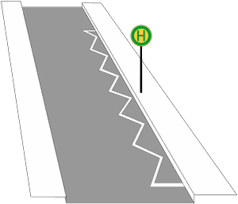

Zeichen 299
Grenzmarkierung für Halt- oder Parkverbote

22 Tatbestände dazu
141026Sie parkten innerhalb einer Grenzmarkierung (Zeichen 299) für ein Parkverbot.
10 €
141027
Sie parkten innerhalb einer Grenzmarkierung (Zeichen 299) für ein Parkverbot und behinderten +) dadurch Andere.
15 €
141028
Sie parkten länger als 3 Stunden innerhalb einer Grenzmarkierung (Zeichen 299) für ein Parkverbot.
20 €
141029
Sie parkten länger als 3 Stunden innerhalb einer Grenzmarkierung (Zeichen 299) für ein Parkverbot und behinderten +) dadurch Andere.
30 €
141123
Sie hielten innerhalb einer Grenzmarkierung (Zeichen 299) für ein Haltverbot im Bereich eines Bussonderfahrstreifens (Zeichen 245).
55 €
141350
Sie hielten innerhalb einer Grenzmarkierung (Zeichen 299) für ein Haltverbot.
20 €
141351
Sie hielten innerhalb einer Grenzmarkierung (Zeichen 299) für ein Haltverbot und behinderten +) dadurch Andere.
35 €
141352
Sie parkten innerhalb einer Grenzmarkierung (Zeichen 299) für ein Haltverbot.
25 €
141353
Sie parkten innerhalb einer Grenzmarkierung (Zeichen 299) für ein Haltverbot und behinderten +) dadurch Andere.
40 €
141354
Sie parkten länger als 1 Stunde innerhalb einer Grenzmarkierung (Zeichen 299) für ein Haltverbot.
40 €
141355
Sie parkten länger als 1 Stunde innerhalb einer Grenzmarkierung (Zeichen 299) für ein Haltverbot und behinderten +) dadurch Andere.
50 €
141421
Sie parkten innerhalb einer Grenzmarkierung (Zeichen 299) für ein Parkverbot im Bereich <einer Haltestelle (Zeichen 224)/eines Bussonderfahrstreifens (Zeichen 245)>.
55 €
141622
Sie hielten innerhalb einer Grenzmarkierung (Zeichen 299) für ein Haltverbot im Bereich eines Bussonderfahrstreifens (Zeichen 245) und behinderten +) dadurch Andere.
70 €
141623
Sie hielten innerhalb einer Grenzmarkierung (Zeichen 299) für ein Haltverbot im Bereich eines Bussonderfahrstreifens (Zeichen 245) und gefährdeten +) dadurch Andere.
80 €
141624
Sie hielten innerhalb einer Grenzmarkierung (Zeichen 299) für ein Haltverbot im Bereich eines Bussonderfahrstreifens (Zeichen 245). Es kam zum Unfall.
100 €
141842
Sie parkten innerhalb einer Grenzmarkierung (Zeichen 299) für ein Parkverbot im Bereich <einer Haltestelle (Zeichen 224)/eines Bussonderfahrstreifens (Zeichen 245)> und behinderten +) dadurch Andere.
70 €
141843
Sie parkten innerhalb einer Grenzmarkierung (Zeichen 299) für ein Parkverbot im Bereich <einer Haltestelle (Zeichen 224)/eines Bussonderfahrstreifens (Zeichen 245)> und gefährdeten +) dadurch Andere.
80 €
141844
Sie parkten innerhalb einer Grenzmarkierung (Zeichen 299) für ein Parkverbot im Bereich <einer Haltestelle (Zeichen 224)/eines Bussonderfahrstreifens (Zeichen 245)>. Es kam zum Unfall.
100 €
141845
Sie parkten länger als 3 Stunden innerhalb einer Grenzmarkierung (Zeichen 299) für ein Parkverbot im Bereich <einer Haltestelle (Zeichen 224)/eines Bussonderfahrstreifens (Zeichen 245)>.
70 €
141846
Sie parkten länger als 3 Stunden innerhalb einer Grenzmarkierung (Zeichen 299) für ein Parkverbot im Bereich <einer Haltestelle (Zeichen 224)/eines Bussonderfahrstreifens (Zeichen 245)> und behinderten +) dadurch Andere.
80 €
141847
Sie parkten länger als 3 Stunden innerhalb einer Grenzmarkierung (Zeichen 299) für ein Parkverbot im Bereich <einer Haltestelle (Zeichen 224)/eines Bussonderfahrstreifens (Zeichen 245)> und gefährdeten +) dadurch Andere.
80 €
141848
Sie parkten länger als 3 Stunden innerhalb einer Grenzmarkierung (Zeichen 299) für ein Parkverbot im Bereich <einer Haltestelle (Zeichen 224)/eines Bussonderfahrstreifens (Zeichen 245)>. Es kam zum Unfall.
100 €